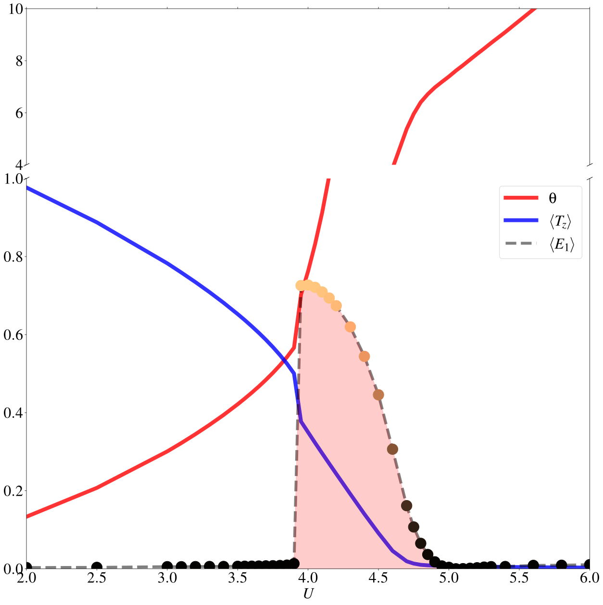

In-plane excitons in quantum spin Hall insulators
In this finale example we discuss an interesting symmetry breaking case in the same QSHI model introduced in Interacting Bernevig-Hughes-Zhang model. Specifically, we consider the case of excitonic condensation described by the order parameters \(\vec{E}=[E_0,E_1,E_2,E_3]\) which, in terms of the Gamma matrices, read \(E_a = \langle \psi_i^\dagger \Gamma_{a1} \psi_i \rangle\).
The analysis of the impurity susceptibilities in the previous section,
suggest a possible instability towards the in-plane triplet exciton
state \(E_1\) or \(E_2\). Interestingly, the onset of this
state breaks several symmetries, e.g. time-reversal and spin SU(2).
As thus, this is a physical case to investigate the ed_mode =
nonsu2 mode in EDIpack2.0.
The considerations about the model Hamiltonian and the non-interacting solution remain identical to the previous case Interacting Bernevig-Hughes-Zhang model. Here we discuss how to change the program to tackle the specific issue of in-plane exciton condensation in QSHI.
The general structure of the code is unchanged but for one important part: the bath construction. We get:
1!> Get local Hamiltonian summing over k (one can do better)
2allocate(Hloc(Nso,Nso))
3Hloc = sum(Hk,dim=3)/Lk
4where(abs(dreal(Hloc))<1d-6)Hloc=zero
5!> Set H_{loc} in EDIpack2
6call ed_set_hloc(Hloc)
7!> Get bath dimension and allocate user bath to this size
8! ~removed~[Nb=ed_get_bath_dimension()]~
9!> Setup the replica bath basis for the case E0EzEx(singlet,tripletZ,tripletX)
10allocate(lambdasym_vector(Nbath,4))
11allocate(Hsym_basis(Nso,Nso,4))
12Hsym_basis(:,:,1)=Gamma5 ;lambdasym_vector(:,1)= Mh
13Hsym_basis(:,:,2)=GammaE0 ;lambdasym_vector(:,2)= sb_field
14Hsym_basis(:,:,3)=GammaEz ;lambdasym_vector(:,3)= sb_field
15Hsym_basis(:,:,4)=GammaEx ;lambdasym_vector(:,4)=-sb_field
16!> Set the replica bath
17call ed_set_Hreplica(Hsym_basis,lambdasym_vector)
18!> Get bath dimension and allocate user bath to this size
19Nb=ed_get_bath_dimension(4) !(Hsym_basis)
20allocate(Bath(Nb))
21!
22!> Initialize the ED solver (bath is guessed or read from file)
23call ed_init_solver(bath)
We first generate a basis of 4 matrices \(O_i=[\Gamma_{03},\Gamma_{01},\Gamma_{31},\Gamma_{11}]\) and a set of parameters \(\vec{\lambda}^p=[ \lambda^p_1,\lambda^p_2,\lambda^p_3,\lambda^p_4]\) which will be used to parametrize any bath Hamiltonian as \(h^p =\sum_i \lambda_i^p O_i\). The rest of the implementation is unaltered, except for a couple of printing flags.
We can now discuss some results obtained with this EDIpack2.0 code concerning the exciton condensation in QSHI. More results can be found in PhysRevB.107.115117.
To make a connection with the disordered case, we consider here \(M=1\) and fix the Hund’s exchange to \(J/U=0.25\). Then we illustrate the effect of raising the interaction strength \(U\). In the top panels of the following figure we report the evolution (from left to right) of the spectral functions \(-\Im G_{a=1,2}(\omega)\) for increasing \(U\) in the three different phases of the system, respectively: QSHI (\(U=2\)), Excitonic insulator (\(U=4\)) and Mott insulator (\(U=6\)). Quite interestingly the spectral functions in the first two cases reveal an almost identical gap size at low energy.
Yet, a closer look at the topological Hamiltonian \(H_{top}\) show the completely different the low-energy effective band structure. In panel D we show the expected behavior for a QSHI, featuring a band inversion around the topological gap and full spin symmetry. In panel E however, we observe a much larger energy separation and the breaking of spin degeneracy.

In order to better assess the nature of the state interposing between the QSHI and the Mott insulator, we report in the next figure the behavior of the in-plane triplet excitonic order parameter \(\langle E_x \rangle\). As the critical strength at about \(U\simeq 4\) is reached we observe a sharp discontinuous formation of a broken symmetry state with a finite order parameter. Further increasing the interaction strength the value of \(\langle E_x \rangle\) decreases slowly towards zero signalling the continuous transition to a Mott state (which can be possibly unstable towards magnetic ordering, neglected in this calculation).
For comparison we report in the same figure also the evolution of the orbital polarization \(\langle T_z\rangle\) and of the correlation strength \(\theta\) defined as the deviation from a constant, mean-field, behavior of the sele-energy function. The first quantity has a decreasing behavior with a small discontinuity at the QSHI to EI transition, while it continuously vanishes at the Mott transition. Interestingly, the correlation strength which is smoothly increasing in the QSHI, shows a sudden increase in the EI reaching large values to finally settle down to a linearly increasing behavior in the Mott state.
{kind=link}
The program to solve the main model can be found here:
Exciton BHZ Code
A li of replica bath parameters used in the calculations reported in fig.1 are here:
Bath \(M=1\), \(J/U=0.25\) and \(U=2\)
hamiltonian.restartBath \(M=1\), \(J/U=0.25\) and \(U=4\)
hamiltonian.restartBath \(M=1\), \(J/U=0.25\) and \(U=6\)
hamiltonian.restart
Here is an example of input file used in the calculations above: InputFile